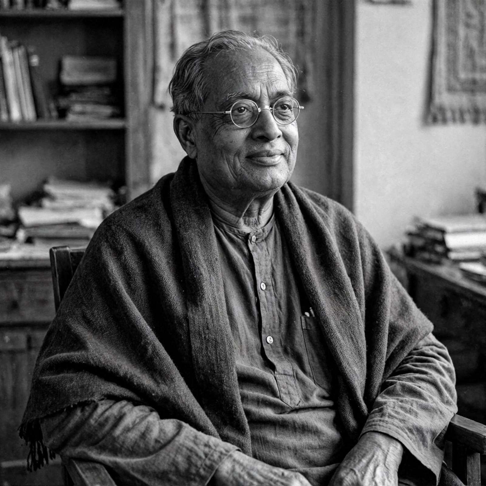

Satyendra Nath Bose
| Born | 1 January 1894, Calcutta, British India |
|---|---|
| Died | 4 February 1974 (aged 80), Calcutta, India |
| Known for | Bose–Einstein statistics, Bose–Einstein condensate, bosons |
| Institutions | University of Dhaka, University of Calcutta |

[Image: Photograph of Satyendra Nath Bose, seated, in middle age]Satyendra Nath Bose (1 January 1894 – 4 February 1974) was an Indian theoretical physicist and mathematician, specialising in quantum mechanics. He is best known for his work on quantum mechanics in the early 1920s, in collaboration with Albert Einstein, which established the foundation of Bose–Einstein statistics and the theory of the Bose–Einstein condensate. The elementary particles named bosons honour his name.
Working in relative isolation at the University of Dhaka, Bose in 1924 derived Planck's radiation law by a new counting of photon states. When Indian and British journals stalled on his paper, he sent it to Einstein, who recognised its importance, translated it into German and arranged its publication — the start of a famous collaboration.
The 1924 paper
Bose treated light as a gas of indistinguishable photons and counted the ways they could occupy phase-space cells of volume h³, obtaining Planck's law without any classical input — the first derivation not contaminated by classical physics. Einstein immediately applied the same counting to a gas of massive atoms, predicting that at sufficiently low temperatures the atoms would condense into the lowest energy state: the Bose–Einstein condensate, finally created in the laboratory in 1995 (Nobel Prize 2001).
Later life
Bose spent 1924–26 in Europe, working in Paris with Marie Curie and meeting Einstein in Berlin. He returned to Dhaka as professor and later served as vice-chancellor of the University of Calcutta (1956–58) and as a nominated member of India's upper house of parliament. Although he never won the Nobel Prize, his name is attached to an entire class of particles: all integer-spin particles — photons, gluons, the Higgs boson — are bosons obeying his statistics.